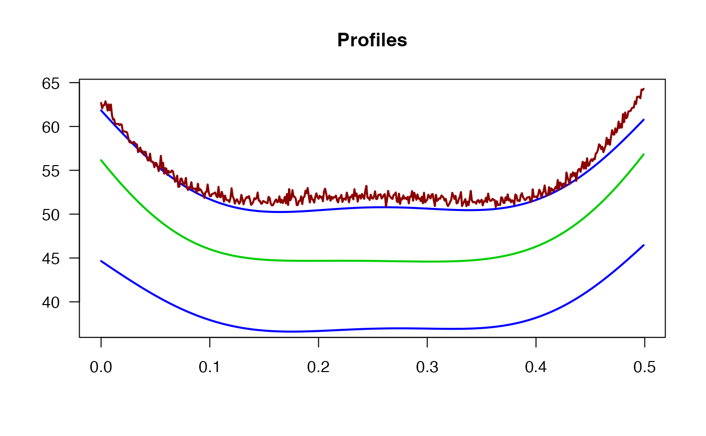

Returns a list with information about the out-of-control profiles given a set of profiles and some control limits
outProfiles(profiles, x = 1:nrow(profiles), cLimits, tol = 0.5)Matrix of profiles
Vector with the independent variable
Matrix with the prototype and confidence bands profiles
Tolerance (%)
a list with the following elements:
labels of the out-of-control profiles
ids of the out-of-control profiles
proportion of times the profile values are out of the limits
Cano, E.L. and Moguerza, J.M. and Prieto Corcoba, M. (2015) Quality Control with R. An ISO Standards Approach. Springer.
wby.phase1 <- ss.data.wby[, 1:35]
wb.limits <- climProfiles(profiles = wby.phase1,
x = ss.data.wbx,
smoothprof = TRUE,
smoothlim = TRUE)
wby.phase2 <- ss.data.wby[, 36:50]
wb.out.phase2 <- outProfiles(profiles = wby.phase2,
x = ss.data.wbx,
cLimits = wb.limits,
tol = 0.8)
wb.out.phase2
#> $labOut
#> [1] "P47"
#>
#> $idOut
#> [1] 12
#>
#> $pOut
#> [1] 0.00 0.00 0.00 0.00 0.00 0.01 0.00 0.00 0.00 0.00 0.00 0.95 0.00 0.00 0.00
#>
plotProfiles(wby.phase2,
x = ss.data.wbx,
cLimits = wb.limits,
outControl = wb.out.phase2$idOut,
onlyout = TRUE)
